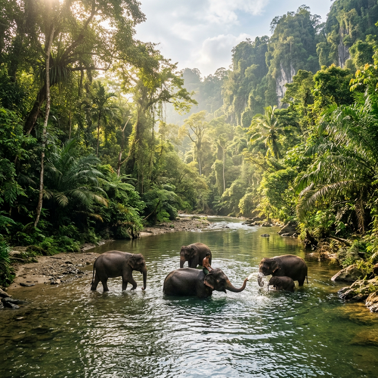
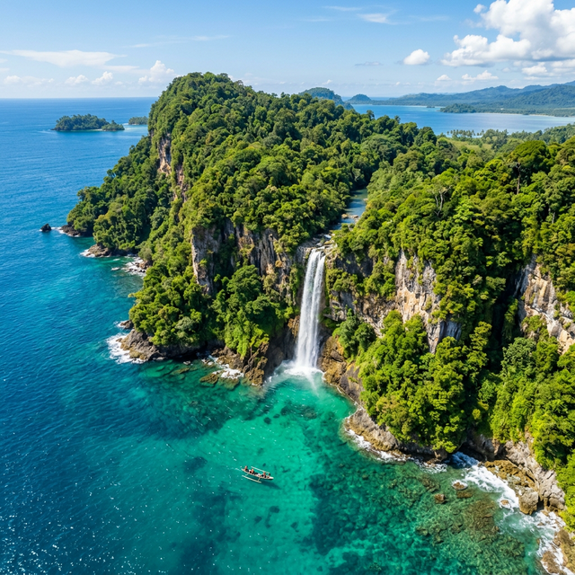
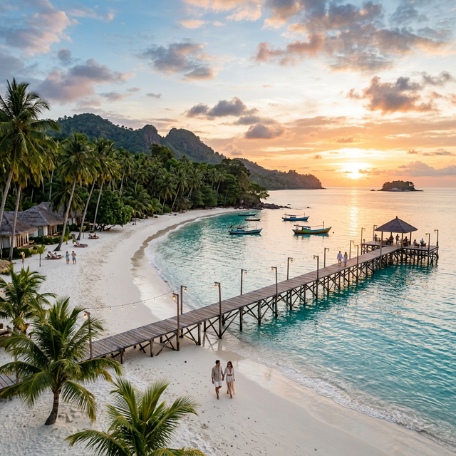
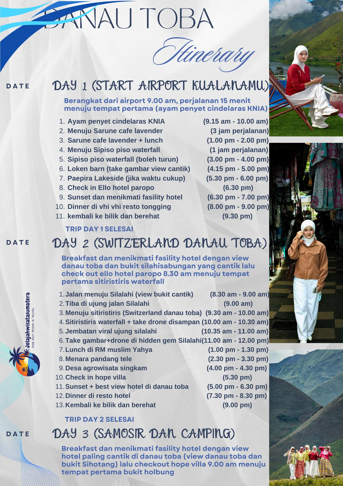
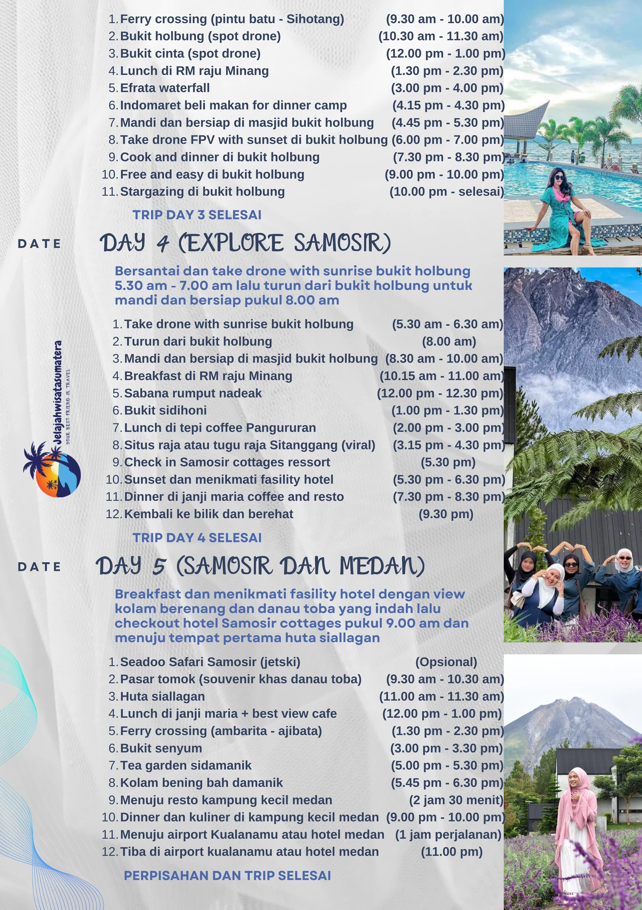
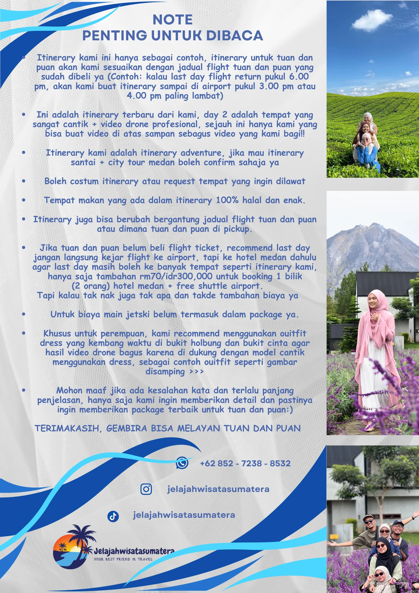

Teman terbaik perjalanan Anda.
Jelajah Wisata Sumatera adalah agen travel yang membuka trip ke 4 tempat yang indah di Pulau Sumatera:




Mengapa Memilih Kami?
- Kami menerapkan prinsip kejujuran dan kepuasan tamu adalah harga mati dan yang paling utama
- Satu satunya agent travel yang memberikan jaminan 100% uang kembali jika liburannya tidak sesuai atau tidak menyenangkan (contoh: kami memberikan video hotel yang akan digunakan beserta viewnya, dan itulah yang akan tuan dan puan dapatkan)
- Transaksi diluar harga package transparan dan tidak dilebihkan demi keuntungan pribadi, contoh: jika tamu mau main jetski atau yang lainnya, pembayaran jetski langsung ke pihak jetski (seadoo Safari Samosir) tanpa melalui kami
- Memiliki itinerary yang menarik dan sangat detail, sehingga tuan dan puan bisa tau tripnya pasti akan sangat seru
- Tour guide full service, akan siap membantu tuan dan puan dalam situasi apapun, seperti membantu membawa barang bawaan atau membantu mengambil gambar dan video menggunakan camera dan drone
- Jelajahwisatasumatera sudah berdiri selama 2 tahun dan sudah begitu banyak tamu yang kami handle dari dalam negara maupun luar negara, satupun tamu kami tidak ada yang kecewa dengan trip dan pelayanan yang kami berikan
- Privasi tuan dan puan akan kami jaga ketat jika request liburannya tidak ingin siapapun tahu, contohnya gambar/video selama liburan tidak akan kami upload ke story sosial media kami jika tidak dapat izin dari tuan & puan sebagai tamu kami
- Tour guide tidak merokok/vape
- Tour guide akan membawa tuan dan puan ke tempat makan yang enak dan 100% halal
- Satu satunya agent travel dengan gear camera dan drone paling lengkap di medan (Canon, Nikon, Sony, dji mini 3, dji avata 360, dji mavic 4 pro, gimbal RS3 mini, iPhone 17 pro dan lain lain) semua gear camera dan drone milik kami, bukan pinjam atau sewa, jadi boleh take gambar dan video disemua tempat, dan juga pastinya gear akan terus kami tambah dan upgrade
- Balance/baki trip dibayar setelah trip selesai atau sebelum berpisah di airport (hati hati dengan travel agent yang meminta bayaran full payment di awal atau hari pertama)
- Jelajahwisatasumatera sudah memiliki perizinan usaha yang terdaftar di negara Indonesia (PT JELAJAH WISATA SUMATERA)
Contoh Itinerary 5D4N Danau Toba



Untuk detail package dan cara booking boleh click table yang paling atas dan pilih mau trip yang berapa hari ya
Contoh: swaktu awak click yang 5D4N akan diarahkan ke whatsapp kami dan kami akan memberikan detail package seperti
- Pricelist
- Included
- Itinerary
- Video hotel yang akan digunakan selama trip
- Contoh hasil video drone kami
- Contoh hasil editing
- Dan detail lainnya
Menggunakan whatsapp.
Disclaimer jika awak belum beli flight ticket mohon untuk tanya kami terlebih dahulu untuk available date, sebab lebih banyak yang kami tolak daripada kami terimakasih sebab tarikh yang dipilih sudah tak available.
Terimakasih, gembira bisa melayan tuan dan puan😊